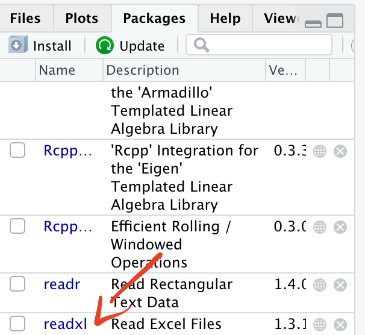

2 Session 1: Introduction to R
- Course structure
- Why R?
- Installing R
- Setting up files/folders
- R packages
- Importing data
- Useful resources
2.1 Course structure
6 teaching sessions drawing from several resources including the Epidemiologist R handbook
An excellent resource for all skill/experience levels
Direct towards specific sections for you to work through in your own time
2 hours sessions, twice a week to present key topics and answer questions

2.3 Installing R
For this course, you will need to install 2 items:
R programming language
R Studio
Integrated Development Environment (IDE)
A very helpful resource for writing and running R code
You will need to install them in this order - First R, then R studio
2.4 Setting up files and folders

“Massive Wall of Organized Documents” by Zeusandhera is licensed with CC BY-SA 2.0. To view a copy of this license, visit https://creativecommons.org/licenses/by-sa/2.0/
2.4.1 Best practice
Setting up files and folders will make your analysis (and life!) easier
Folder structure
Naming files and folders
2.4.1.1 Folder structure
R Studio works best when you use its project function
Each project contains all of your inputs, outputs and code
This also makes it easier to share folders with colleagues
- Everything is in one place!
Projects are covered in more detail in the Epidemiologist R handbook: Chapter 6 “R Projects”
2.4.1.2 Naming files and folders
If you want to share your code with colleagues or return to code after several weeks/months, you will be grateful that you gave your files and folders meaningful names! Many organisations have style guides to ensure that teams can collaborate on coding projects.

Key points to remember for naming
Keep the name short
Instead of “data_import_of_file_for_analysis.R”
- “import_file.R”
Avoid spaces!
Instead of “import file.R”
- “_” “import_file.R”
- “-” “import-file.R”
- camelCase “importFile.R”
2.5 Navigating in R studio
RStudio is the most popular option for working with the R programming language. The Epidemiologist R handbook has a section discussing the various windows you will see when you start RStudio : 3.5 RStudio

2.6 R packages
2.6.1 What is an R package?
Definition from the Epidemiologist R handbook - 3.7 “Packages”
“An R package is a shareable bundle of code and documentation that contains pre-defined functions. Users in the R community develop packages all the time catered to specific problems, it is likely that one can help with your work! You will install and use hundreds of packages in your use of R.”
Packages can simplify your workflow by combining multiple steps into a smaller number of commands.
Example: readxl is a package of functions used to import data from Excel to R.
2.6.2 Installing a package
install.packages(“readxl”)
We have asked R to install the package readxl.
The installation has been successful. You do not need to reinstall the packages every time you start a new project as they are saved in your library.
In R, red text does not mean there has been an error! It means that R is warning you about something related to the function you have instructed R to apply to the data.
Epidemiologist R handbook: Section 3.13 Errors vs. warnings
You will now be able to see the package in your list of packages.

2.6.3 Loading a package
Now that readxl has been installed, you will be able to load it and use its functions.
library(readxl)When the package has been successfully loaded, you will see a tick mark in the box.
2.6.3.1 pacman
It is good practice to load all packages at the start of a script. This can help you to see which packages are being loaded and it ensures that you can write code without interruptions from the library command.
There is a package called pacman which can help with this process. When you run pacman::p_load you can list all of the packages you want to load. If the package has not previously been installed, pacman will install it. If the package has been installed, pacman will load it.
pacman::p_load(readxl,here)2.6.4 Using a package
Each package has multiple functions that you can use on your data.
To read more about a particular package, type
?readxlHelp documentation for readxl
2.7 Objects
So far we have installed, loaded and used a package (readxl). But how do we use the data generated from applying the functions? We assign the information to “objects”.
Section in Epidemiologist for R handbook about Objects
“Everything you store in R - datasets, variables, a list of village names, a total population number, even outputs such as graphs - are objects which are assigned a name and can be referenced in later commands.”
To explain objects, we will calculate a value, assign it to an object and then use the object for a second calculation.
2+2## [1] 4We can assign the calculation “2+2” to an object called “a”.
a <- 2+2We can then use the object a to show the results of the calculation.
a## [1] 4We can also use this value for further calculations such as adding 4 to the object a.
a + 4## [1] 8b <- a+4The result of this calculation is now stored in the object “b”.
b## [1] 82.8 Importing data
For this example, we want to import data that is currently stored in an Excel formatted file “.xlsx”. So we can use the function read_xlsx from the readxl package.
read_xlsx(here('data','AfricaCovid','AfricaCovid.xlsx'))## New names:
## * `` -> ...1## # A tibble: 58 x 2
## ...1 `www.hera-ngo.org`
## <chr> <chr>
## 1 <NA> org.hera@gmail.com
## 2 Country Last update
## 3 Algeria 44318
## 4 Angola 44318
## 5 Benin 44317
## 6 Botswana 44317
## 7 Burkina Faso 44317
## 8 Burundi 44318
## 9 Cameroon 44317
## 10 Central African Republic 44317
## # … with 48 more rowsBut what does this show? And how can we use it?
- Before importing a file from Excel, it can be helpful to open the file in Excel so we can see what data are stored in the file

So when we tell R to use the function read_xlsx, it reads the first sheet which is called “ReadMore”.It looks like this is a summary sheet with information about when data for each country was last updated. So how do we tell R to read in a different sheet from the Excel file?
Question - How many confirmed cases of COVID were recorded across Africa in July 2020?
First step - Import data from the sheet containing information on COVID cases
We can use the excel_sheets function from readxl to get the names of all sheets in the Excel workbook
excel_sheets(here('data','AfricaCovid','AfricaCovid.xlsx'))## [1] "ReadMore" "Infected_per_day" "Recovered_per_day"
## [4] "Deceased_per_day" "Cumulative_infected" "Cumulative_recovered"
## [7] "Cumulative_deceased" "SDN FLore" "GHA Flore"
## [10] "SLE Flore" "ZAF Flore"From this list we can see that we want to import data from the sheet “Infected_per_day”.
read_xlsx(here('data','AfricaCovid','AfricaCovid.xlsx'), sheet="Infected_per_day")## # A tibble: 53 x 492
## ISO COUNTRY_NAME AFRICAN_REGION `43831` `43832` `43833` `43834` `43835`
## <chr> <chr> <chr> <dbl> <dbl> <dbl> <dbl> <dbl>
## 1 DZA Algeria Northern Afri… 0 0 0 0 0
## 2 AGO Angola Southern Afri… 0 0 0 0 0
## 3 BEN Benin Western Africa 0 0 0 0 0
## 4 BWA Botswana Southern Afri… 0 0 0 0 0
## 5 BFA Burkina Faso Western Africa 0 0 0 0 0
## 6 BDI Burundi Central Africa 0 0 0 0 0
## 7 CMR Cameroon Central Africa 0 0 0 0 0
## 8 CAR Central African… Central Africa 0 0 0 0 0
## 9 TCD Chad Central Africa 0 0 0 0 0
## 10 COM Comoros Eastern Africa 0 0 0 0 0
## # … with 43 more rows, and 484 more variables: 43836 <dbl>, 43837 <dbl>,
## # 43838 <dbl>, 43839 <dbl>, 43840 <dbl>, 43841 <dbl>, 43842 <dbl>,
## # 43843 <dbl>, 43844 <dbl>, 43845 <dbl>, 43846 <dbl>, 43847 <dbl>,
## # 43848 <dbl>, 43849 <dbl>, 43850 <dbl>, 43851 <dbl>, 43852 <dbl>,
## # 43853 <dbl>, 43854 <dbl>, 43855 <dbl>, 43856 <dbl>, 43857 <dbl>,
## # 43858 <dbl>, 43859 <dbl>, 43860 <dbl>, 43861 <dbl>, 43862 <dbl>,
## # 43863 <dbl>, 43864 <dbl>, 43865 <dbl>, 43866 <dbl>, 43867 <dbl>,
## # 43868 <dbl>, 43869 <dbl>, 43870 <dbl>, 43871 <dbl>, 43872 <dbl>,
## # 43873 <dbl>, 43874 <dbl>, 43875 <dbl>, 43876 <dbl>, 43877 <dbl>,
## # 43878 <dbl>, 43879 <dbl>, 43880 <dbl>, 43881 <dbl>, 43882 <dbl>,
## # 43883 <dbl>, 43884 <dbl>, 43885 <dbl>, 43886 <dbl>, 43887 <dbl>,
## # 43888 <dbl>, 43889 <dbl>, 43890 <dbl>, 43891 <dbl>, 43892 <dbl>,
## # 43893 <dbl>, 43894 <dbl>, 43895 <dbl>, 43896 <dbl>, 43897 <dbl>,
## # 43898 <dbl>, 43899 <dbl>, 43900 <dbl>, 43901 <dbl>, 43902 <dbl>,
## # 43903 <dbl>, 43904 <dbl>, 43905 <dbl>, 43906 <dbl>, 43907 <dbl>,
## # 43908 <dbl>, 43909 <dbl>, 43910 <dbl>, 43911 <dbl>, 43912 <dbl>,
## # 43913 <dbl>, 43914 <dbl>, 43915 <dbl>, 43916 <dbl>, 43917 <dbl>,
## # 43918 <dbl>, 43919 <dbl>, 43920 <dbl>, 43921 <dbl>, 43922 <dbl>,
## # 43923 <dbl>, 43924 <dbl>, 43925 <dbl>, 43926 <dbl>, 43927 <dbl>,
## # 43928 <dbl>, 43929 <dbl>, 43930 <dbl>, 43931 <dbl>, 43932 <dbl>,
## # 43933 <dbl>, 43934 <dbl>, 43935 <dbl>, …We can see a snapshot of the data from the sheet “Infected_per_day”
2.8.1 Assigning data to an object
We have previously used the function read_xlsx from the package readxl to import data from an Excel spreadsheet.
However, we didn’t assign this data to an object, so it is not possible to use the data from the import step.
We can assign the data to an object and then conduct further analysis.
africa_covid_cases <- read_xlsx(here('data','AfricaCovid','AfricaCovid.xlsx'), sheet="Infected_per_day")You will now see the object in the “Environment” section of R Studio.
Now the data have been assigned to the object “africa_covid_cases”, we can start to work with the data.
2.9 Exporting data
Along with importing data, R can be used to export objects. This can be helpful if you need to send an analysis dataset to a colleague. There are many options for exporting data. The simplest is the write.csvfunction which is pre-installed when you run R
write.csv(africa_covid_cases, here('data', 'africa_covid_cases_long.csv'))This will save a csv file containing the data from the africa_covid_cases_long object.
The package readxl contains several functions for importing data. There is another package called writexl which has multiple functions for exporting data.
install.packages("writexl")To use writexl to export a
library(writexl)
write_xlsx(africa_covid_cases, here('data', 'africa_covid_cases_long.xlsx'))2.10 Exercises
Open R, and run the readxl package
- What does the readxl package do?
Import the Excel dataset (africa_cdc_covid_cases.xlsx) into R